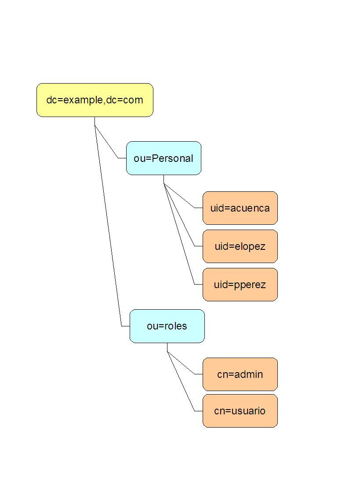

Seguridad en JBoss. LDAP
Autentificación en JBoss
En JBoss, los usuarios, passwords y roles se obtienen de un security domain, que es el equivalente al realm de Tomcat. Al igual que en Tomcat, los datos se pueden tomar de un fichero XML o de una base de datos, de hecho JBoss es mucho más flexible que Tomcat en este aspecto. Vamos a ver cómo crear y configurar un security domain en JBoss.
Crear el dominio
Los dominios de seguridad se crean por defecto en el fichero de configuración login-config.xml, en el directorio conf.
El MBean XMLConfig controla esta configuración. De este modo, a través de la consola JMX podemos ver información sobre la seguridad de las aplicaciones y por ejemplo cambiar el nombre o localización física de login-config.xml. Nosotros, no obstante, usaremos la configuración por defecto.
Si abrimos el fichero, observaremos que en él se define un conjunto de <application-policy> que son precisamente los dominios de seguridad. Cada dominio tiene un nombre asociado, y un conjunto de <login-module>, es decir, de sitios de donde se puede obtener la información de usuarios, passwords y roles. Por ejemplo, al final del fichero de configuración original de JBoss podemos ver este dominio:
<application-policy name = "other">
<authentication>
<login-module code = "org.jboss.security.auth.spi.UsersRolesLoginModule"
flag = "required" />
</authentication>
</application-policy>
Cada aplicación que use seguridad JavaEE debe configurarse a través de un fichero adicional XML para usar uno de los dominios definidos aquí. En este caso, el nombre other está definido en JBoss como el dominio por defecto, que se emplea cuando una aplicación requiere seguridad JavaEE pero no tiene un dominio asociado.
JBoss implementa lo que denomina una pila de autentificación ("authentification stack"). La idea consiste en que podemos usar varios módulos de login de modo, por ejemplo, que si el usuario no se puede autentificar a través de uno de ellos se intente con otro. En el ejemplo el atributo obligatorio flag tiene valor required, indicando que si falla la autentificación con este módulo, el proceso de autentificación debe fallar. En este caso solo hay un módulo configurado, pero podríamos tener varios y por ejemplo marcarlos como flag="sufficient". En este caso, con que la autentificación tenga éxito en uno de ellos bastaría. Veremos un ejemplo de esto posteriormente, aunque hay más modos de funcionamiento aparte de "required" y "sufficient". Se recomienda consultar la guía de configuración de JBoss para una información más detallada.
El dominio por defecto usa como módulo de login el UsersRolesLoginModule, una implementación muy sencilla que toma los usuarios de un par de ficheros .properties, uno definiendo usuarios y passwords (users.properties) y otro usuarios y roles (roles.properties). Estos ficheros se pueden colocar en cualquier lugar del CLASSPATH de la aplicación, y permiten probar la autentificación de manera sencilla.
JBoss proporciona varias implementaciones alternativas de login module. A continuación vamos a ver con más detalle la que permite autentificar contra una base de datos.
Autentificar contra una BD
La implementación que usa JBoss para esta tarea es DatabaseServerLoginModule. La información de usuarios, passwords y roles puede estar en la base de datos de la forma que queramos, siempre que podamos extraerla mediante SQL en el formato que espera JBoss.
JBoss usa dos consultas SQL para extraer la información:
- La que obtiene el password (PrincipalsQuery) nos debe devolver un registro con un único campo que será el password.
- La consulta de los roles (RolesQuery) debe devolver un conjunto de registros cada uno con dos campos. El primero debe ser el rol del usuario. Para permisos de usuario convencionales, el segundo campo debe ser el valor literal Roles. Este último valor en realidad depende de la configuración de JAAS, aunque habitualmente no es necesario cambiarla.
Además de las consultas, para completar la configuración debemos referenciar la fuente de datos para conectar con la base de datos con la información de autentificación.
<application-policy name="seguridadBD">
<authentication>
<login-module
code="org.jboss.security.auth.spi.DatabaseServerLoginModule"
flag="required">
<module-option name="dsJndiName">java:/DefaultDS</module-option>
<module-option name="principalsQuery">
select password from USUARIOS where login=?
</module-option>
<module-option name="rolesQuery">
select rol, 'Roles' from USU_ROLES where login=?
</module-option>
</login-module>
</authentication>
</application-policy>
En el ejemplo anterior, usamos como fuente de datos una de nombre DefaultDS. Estamos suponiendo que la tabla USUARIOS contiene un registro por usuario, incluyendo login y password y que la tabla USU_ROLES relaciona login con rol.
Especificar el dominio que usará una aplicación
La seguridad JavaEE se configura en cada aplicación del mismo modo que lo hacíamos en Tomcat, recordemos que ese aspecto sí está estandarizado. Lo que no está estandarizado es cómo se enlaza la aplicación con el dominio de seguridad. En JBoss se usa un descriptor de despliegue adicional al web.xml, llamado jboss-web.xml, que debe colocarse también en el WEB-INF de la aplicación. En este archivo se especifica el nombre JNDI del dominio de seguridad. Los nombres JNDI asociados a la seguridad en JBoss llevan el "prefijo" java:/jaas, por lo que habrá que usarlo delante del nombre del dominio definido en login-config.xml.
<!DOCTYPE jboss-web PUBLIC
"-//JBoss//DTD Web Application 2.4//EN"
"http://www.jboss.org/j2ee/dtd/jboss-web_4_0.dtd">
<jboss-web>
<security-domain>java:/jaas/seguridadBD</security-domain>
</jboss-web>
LDAP
Muchas organizaciones mantienen los datos de sus usuarios en un directorio LDAP. JBoss nos da la posibilidad de autentificar los usuarios de nuestras aplicaciones contra este servidor a través de un módulo de login predefinido.
Supongamos que tenemos la estructura LDAP mostrada en la figura. El nodo Personal, de tipo OrganizationalUnit contiene todos los empleados de la organización. Cada empleado está en un nodo de tipo Person y uidObject que contiene todos sus datos: nombre, apellidos, etc, incluyendo login (atributo uid) y password (userpassword). Los roles están almacenados en un nodo aparte. Cada rol es un objeto groupOfNames conteniendo una referencia a los usuarios que tienen ese rol (contiene su identificador único, o DN).
|
árbol de LDAP ejemplo  |
Formato LDIF dn: dc=example,dc=com objectClass: domain objectClass: extensibleObject objectClass: top dc: example dn: uid=pperez,ou=Personal,dc=example,dc=com objectClass: person objectClass: uidObject objectClass: top cn: Pedro sn:: UMOpcmV6IE1hcnTDrW4= uid: pperez userpassword:: cGVyZXpw dn: uid=acuenca,ou=Personal,dc=example,dc=com objectClass: person objectClass: uidObject objectClass: top cn: Alfonso sn: Cuenca Richardson uid: acuenca userpassword:: Y3VlbmNhYQ== dn: uid=elopez,ou=Personal,dc=example,dc=com objectClass: person objectClass: uidObject objectClass: top cn: Eduardo sn:: TMOzcGV6IEZpZ3VlcmVz uid: elopez userpassword:: bG9wZXpl dn: ou=roles,dc=example,dc=com objectClass: organizationalUnit objectClass: top ou: roles dn: cn=admin,ou=roles,dc=example,dc=com objectClass: groupOfNames objectClass: top cn: admin member: uid=acuenca,ou=Personal,dc=example,dc=com member: uid=elopez,ou=Personal,dc=example,dc=com dn: cn=usuario,ou=roles,dc=example,dc=com objectClass: groupOfNames objectClass: top cn: usuario member: uid=acuenca,ou=Personal,dc=example,dc=com member: uid=elopez,ou=Personal,dc=example,dc=com member: uid=pperez,ou=Personal,dc=example,dc=com dn: ou=Personal,dc=example,dc=com objectClass: organizationalUnit objectClass: top ou: Personal |
En la configuración del módulo de login LDAP debemos especificar cómo podemos obtener el identificador completo del usuario (en argot LDAP el DN o distinguished name, que se forma concatenando los identificadores de todos los nodos desde la raíz hasta el objeto). En nuestro caso, cada usuario tiene un identificador del tipo uid=su_login,ou=Personal,dc=example,dc=com. En JBoss este identificador se divide en tres partes: el (propiedad de configuración principalDNPrefix), el login del usuario (que deberá introducir para autentificarse) y el sufijo (propiedad principalDNSuffix). En nuestro caso está claro que el prefijo será "uid=" y el sufijo ",ou=Personal,dc=example,dc=com".
Por otro lado, hay que obtener los roles del usuario. Podemos buscar los roles especificando parte de su identificador (o DN). En este caso, todos los roles se agrupan bajo ou=roles,dc=example,dc=com. El nombre del rol lo define en nuestro caso el atributo cn (en JBoss roleAttributeID). Y finalmente, cada usuario dentro del rol se especifica con el atributo member (en JBoss uidAttributeID). Nótese que incluimos el nombre completo de cada usuario (o sea, su DN), por lo que la propiedad matchOnUserDN será true. La configuración de la búsqueda de roles LDAP puede ser compleja y recomendamos consultar la documentación de JBoss.
La configuración en login-config.xml quedaría así:
...
<application-policy name="seguridadLDAP">
<authentication>
<login-module code="org.jboss.security.auth.spi.LdapLoginModule"
flag="required">
<module-option name="java.naming.factory.initial">
com.sun.jndi.ldap.LdapCtxFactory
</module-option>
<!-- URL del servidor. Ponemos el puerto que usa ApacheDS -->
<module-option name="java.naming.provider.url">
ldap://localhost:10389/
</module-option>
<module-option name="java.naming.security.authentication">
simple
</module-option>
<!--Cómo se forma el identificador completo (DN) del usuario -->
<module-option name="principalDNPrefix">
uid=
</module-option>
<module-option name="principalDNSuffix">
,ou=Personal,dc=example,dc=com
</module-option>
<!-- Dónde están los roles -->
<module-option name="rolesCtxDN">
ou=roles,dc=example,dc=com
</module-option>
<!-- cómo se identifica un usuario concreto en un rol -->
<module-option name="uidAttributeID">member</module-option>
<module-option name="matchOnUserDN">true</module-option>
<!-- dónde se define el nombre del rol -->
<module-option name="roleAttributeID">cn</module-option>
<module-option name="roleAttributeIsDN">false</module-option>
</login-module>
</authentication>
</application-policy>
...
En este ejemplo, la estructura LDAP es muy sencilla. Si la información contenida en el árbol LDAP de nuestra organización no se puede adaptar fácilmente a la forma de trabajar de este módulo de login, tendremos que escribir un módulo propio usando el API de JBoss.
Combinar LDAP con otros módulos
Como el LDAP es algo externo a las aplicaciones web, es normal que los administradores de LDAP se muestren reticentes a introducir en el directorio la información de roles. JBoss puede solucionar el problema combinando la autentificación en LDAP con la autorización (verificación de roles) basada en otro mecanismo, por ejemplo en base de datos. Esto se denomina password stacking y es realmente sencillo de configurar en los casos básicos. Basta con incluir dentro de la política de autentificación asociada a nuestra aplicación más de un módulo de login, especificando que queremos usar password stacking. JBoss intentará usar el primer módulo para autentificar (en nuestro caso LDAP) y si no consigue los roles pasará a usar el/los siguiente/s módulo/s.
<application-policy name="LDAPconBD">
<authentication>
<login-module code="org.jboss.security.auth.spi.LdapLoginModule"
flag="required">
<module-option name="java.naming.factory.initial">
com.sun.jndi.ldap.LdapCtxFactory
</module-option>
<module-option name="java.naming.provider.url">
ldap://localhost:10389/
</module-option>
<module-option name="java.naming.security.authentication">
simple
</module-option>
<module-option name="principalDNPrefix">uid=</module-option>
<module-option name="principalDNSuffix">
,ou=Personal,dc=example,dc=com
</module-option>
<module-option name="password-stacking">
useFirstPass</module-option>
</login-module>
<login-module
code="org.jboss.security.auth.spi.DatabaseServerLoginModule"
flag="required">
<module-option name="dsJndiName">java:/PruebaDS</module-option>
<module-option name="principalsQuery">
select password from usuarios where login=?
</module-option>
<module-option name="rolesQuery">
select rol, 'Roles' from usu_roles where login=?
</module-option>
<module-option name="password-stacking">
useFirstPass</module-option>
</login-module>
</authentication>
</application-policy>
Seguridad del servidor
Las aplicaciones de administración de JBoss (la consola JMX y la consola web) vienen por defecto sin seguridad activada. Al tratarse de aplicaciones críticas es necesario por tanto configurar su seguridad si se está usando en producción. En el fichero login-config.xml ya vienen definidos dominios de seguridad para estas aplicaciones, pero no están activos porque la limitación de acceso definida en el web.xml está comentada.
En cuanto a los privilegios de las aplicaciones web que se ejecutan en el servidor, por defecto JBoss no impone ninguna restricción sobre ellos, ya que se ejecuta sin security manager de java activo. Para activarlo, hay que configurar las opciones de la máquina virtual en el archivo run.bat (o run.sh).En este archivo se define una variable de entorno JAVA_OPTS en la que hay que definir el security manager a emplear y la URL del fichero de políticas de seguridad. Consultar la documentación de JBoss para más información.